Malahide Road
Participated in the submission of this two – tower apartment scheme for planning approval in order to meet submission deadlines. Completed sections & elevations using AutoCAD and provided additional support for completion of floor plans. Calculated floor areas and recorded statistics for schedule of accommodation and housing quality assessment. Also assisted with physical submission of project for planning approval.

Davitt Road
Placed in charge of creating and submitting the amendment application for this project. The project is currently in the working drawing stage and has undergone minor changes in order to satisfy building code. This submission involved setting up a series of drawings showing proposed versus granted drawings and highlighting the changes made in the working drawing stages of the design. The amended set of drawings included highlighted floor plans, elevations and building statistics.
Crodaun
Residential project in which I assisted in the submission for planning approval to Kildare County Council. Working with 3 to 4 team members, we finished drawings for duplex and terraced house layouts submission (Plans, sections, elevations). Ensured consistency with graphics and set up drawing sheets for submission using AutoCAD. Created site model and brief shadow study for submission using Google SketchUp/ AutoCAD. Additionally assisted in completion of contiguous elevations; added detail to drawings and incorporated landscape into elevations. Also assisted in other minor documents.

Feasibility Studies
Given the opportunity to provide feasibility studies to clients with potential development properties. Rough schematic designs were created with guidance from associates/principal of firm. Drawings were made in order to calculate estimated statistics for student accommodation/ residential/ hotel schemes on a given site and presented to client. Some 3D models developed depending on circumstance.
Hotel Scheme (County Meath)
Early stage of a hotel scheme for a large site with heritage elements. Creating standard set of drawings for client approval and planning submission. Re -organized CAD drawings and graphic style in order to improve drawing efficiency. Working on a team of three, I carried out drawings/sketched made by project architects on AutoCAD. I had printed out scaled plans/elevations for discussion/comment and revision within the office. Occasional meetings made with principal to asses progress of project.
 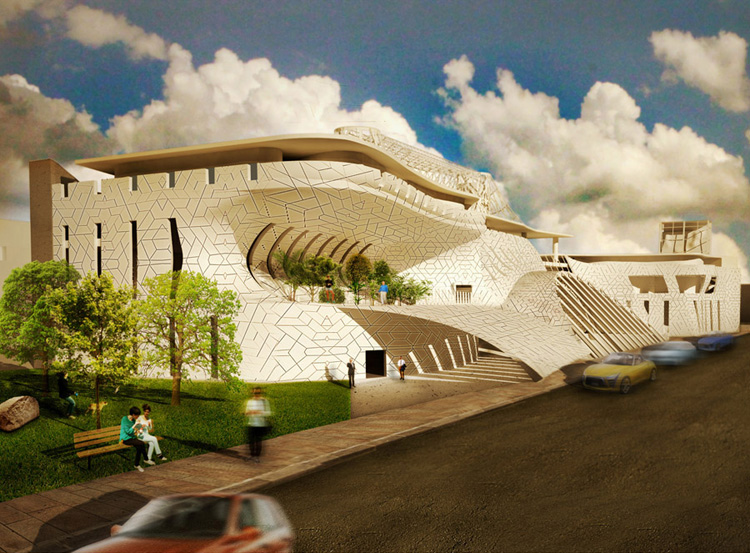
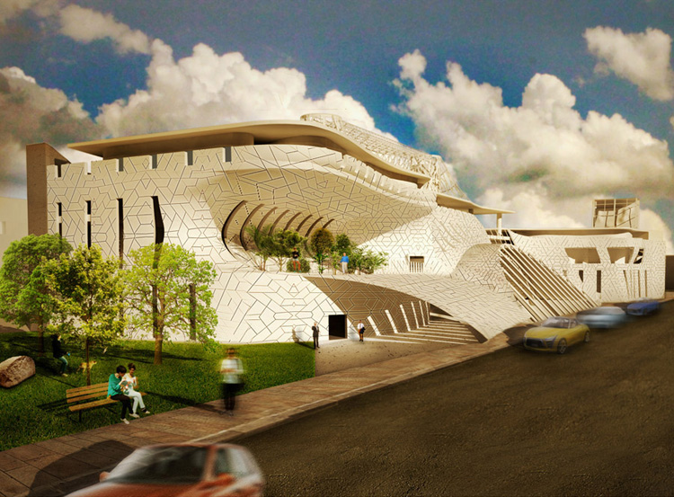
 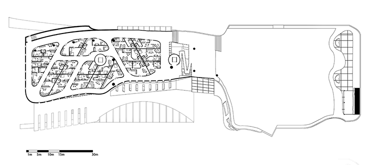
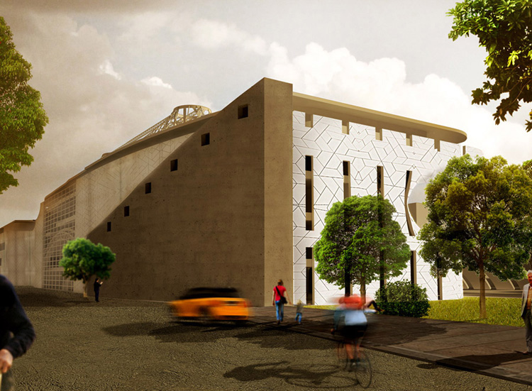
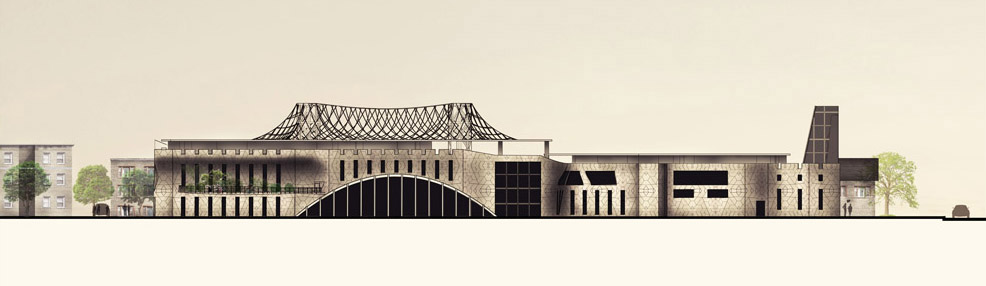
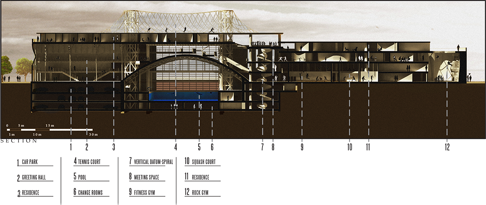
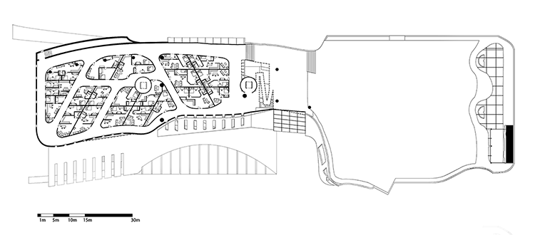
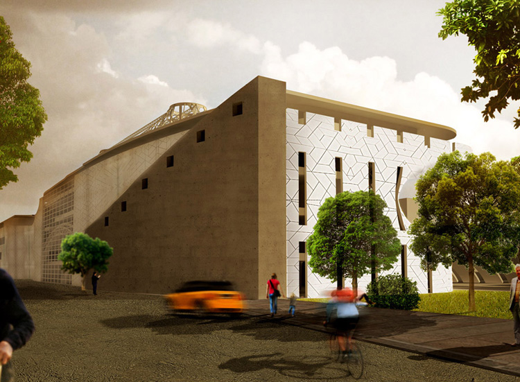
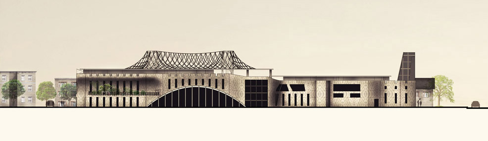
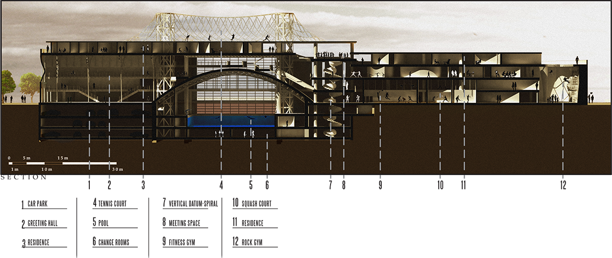

 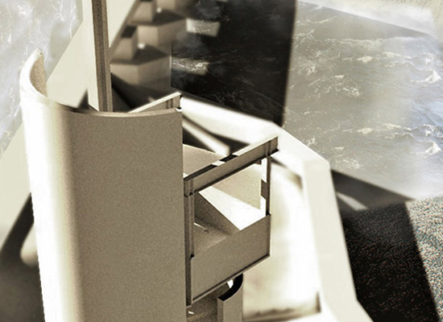
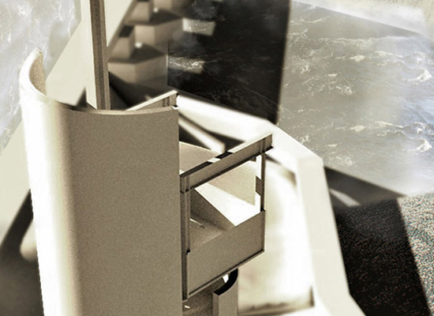
 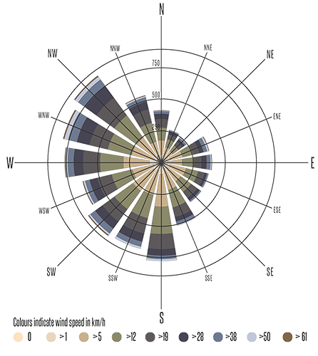
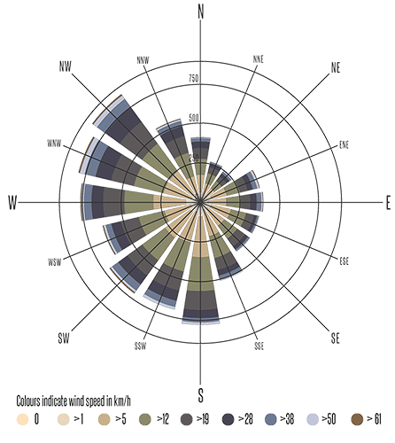
 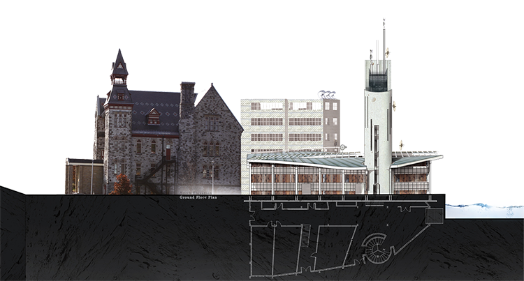
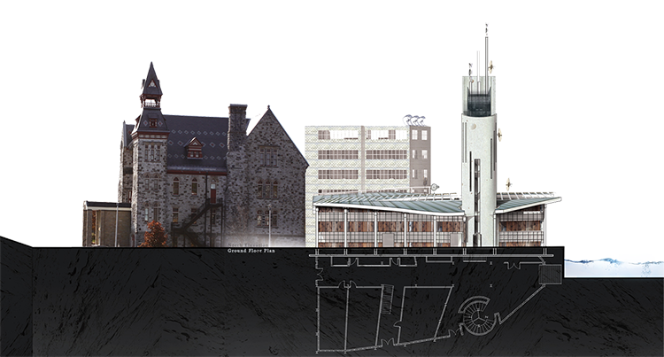